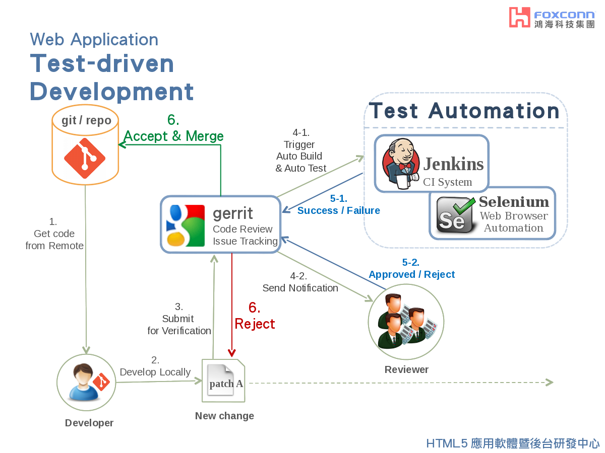

關於我
Writing by Chu-Siang Lai / @chusiang / chusiang.lai (at) gmail.com
我是誰？
賴楚翔
阿翔、凍仁翔、Jonny、chusiang
長期關注
GNU/Linux Server Admin 和自由軟體相關技術。
Debian, Ubuntu, RHEL, CentOS
Apache, Nginx, MySQL, PHP, Vim, Git
進來關注
Jenkins, Gerrit, HTML5, Web Security, Docker ...
過去經驗
- System Engineer
- IT Support
- Web Developer
- Software Engineer
System Engineer
出貨過 PC 200+ 給某大學，並進行軟硬體檢測和維護。
IT Support
管過 RHEL 50+ server，有 on-call 經驗。
- LAMP
- MySQL (InnoDB, HA)
- F5 BIG-IP
Web Developer
撰寫某租屋網。

Software Engineer
- Shell-Script, HTML5, PHP, Python
- Git, Gerrit, Jenkins
- Apache, Nginx, Mantis
GAIA
維護網站服務並進行關站事宜。
XXXXX
建置開發環境和整合自動化測試 (Code Review, Auto Build)。
